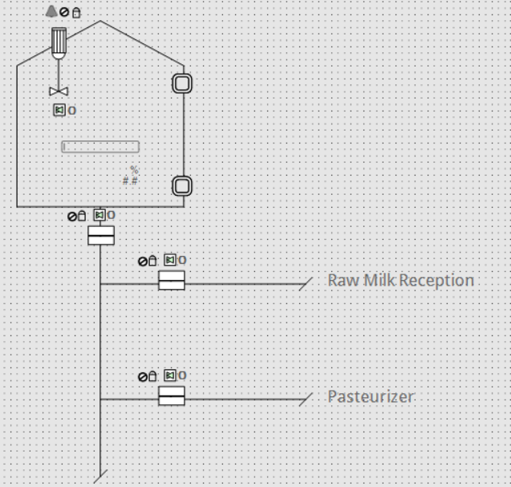
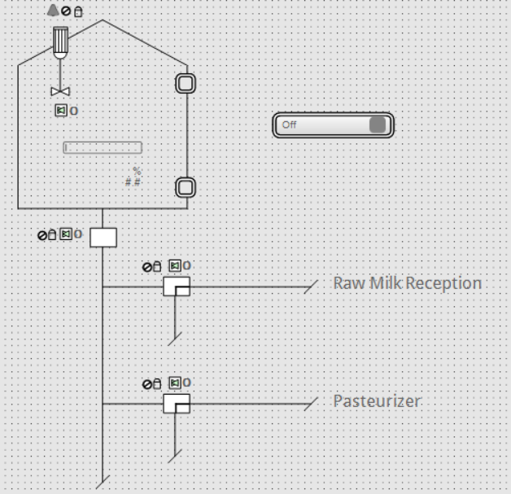

Including Instruments to the Piping
As all the piping of the unit TR1 has been completed in the topic Drawing the Piping, now the instruments used in the sequence need to be added on the piping.

|
NOTE:
All the instruments have been already added into the canvas in the topic Adding Instruments Instances. The only actions left is to position the instruments on the piping and to set their properties if needed. |
| CAT Instance | Position in the piping |
| Agitator TR1M01 | Position the agitator on the top of the tank. So the blades of the agitator are positioned in the tank, where the whole milk is. |
| Valve TR1V01 | Position the valve on the vertical line, just below the tank as it is the one controlling the entrance into the tank. |
| Valve TR1V02 | Position the valve on the Raw Milk Reception horizontal line as it is the one controlling the reception of whole milk. |
| Valve TR1V03 | Position the valve on the Pasteurizer horizontal line as it is the one controlling the access to the pasteurizer. |
| Digital Input TR1LSL01 | Position the digital input in the bottom right side of the tank as it is the one controlling the low level of whole milk. |
| Digital Input TR1LSH01 | Position the digital input in the top right side of the tank as it is the one controlling the high level of whole milk. |
| Analog Input TR1LT01 | Position the analog input inside the tank as it is representing the level of product inside the tank. |
|
|
NOTE:
Before moving the instruments to their position, select them all and bring them to front (). As the instruments have been added to the canvas before the piping then, otherwise, they would be positioned under the lines, which is not wanted. |


|
Now that the instruments have been added, some of them have to be set to follow the settings they have in the P&ID. |
The only instruments that need to be set are the valves. For each of them, the following parameters have to be set:
-
: It defines the valve type.
-
: It defines the default position of the valve.
-
(with XXX the type select in the Valves parameter): It defines the orientation of the valve.
| Instrument Instance | Valves | Valves_ContactType | Valves_XXX | Comments |
| TR1V01 | Butterfly | NC | ButterflyValve_Hor | TR1V01 is a butterfly valve. It just has two positions: Open and Close. By default it is closed. |
| TR1V02 | Three_Way | NO | ThreeWay_RightLeft_Horz | TR1V02 is a three-way valve. The valve transfers the whole milk to the tank only when it gets the command ON. Otherwise, at its default position, the whole milk is diverted. |
| TR1V03 | Three_Way | NO | ThreeWay_RightLeft_Horz | TR1V03 is a three-way valve. The valve transfers the whole milk from the tank to the pasteurizer only when it gets the command ON. Otherwise, at its default position, the raw milk is diverted. |
|
|
All instuments are now fully set up. Two lines can be added below TR1V02 and TR1V03 to represent the evacuation lines that these three way valves are connected to. |
The last step before moving to the next topic is to add the reset button to the canvas.
From the CAT Instances sub-node of the Solution Explorer pad, add the instance ResetButton to the canvas and select sDefault from the Select generic symbol dialog box. Position the reset button on the right of the tank.

|
|
The instance of each instrument is laid out and set. This step is now completed. |